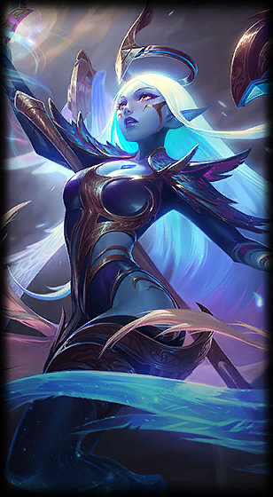

La verdad estoy escribiendo esta carta a las 3 de la mañana. No sé muy bien qué decirte, pero quería escribirte igual. Si te soy sincero, ahora mismo estoy tratando de estar bien conmigo mismo. Hoy intenté hablar con mi padre, pero no pude decir nada… los nervios y el estrés me ganaron.
Últimamente el estrés me está consumiendo bastante, pero aun así quiero terminar con todo esto que tengo pendiente. Quiero cerrar esta etapa y poder regresar tranquilo para hacer lo que más me gusta: jugar contigo y con Shirua, molestarlos un rato, ser el mal tercio como siempre y pasar momentos simples que al final terminan siendo los que más se disfrutan.
También quiero ver cómo va tu relación, porque al final lo único que realmente quiero es verte feliz. Saber que estás bien, que sonríes y que las cosas te están saliendo como quieres. Eso para mí ya es suficiente.
Tal vez no soy muy bueno diciendo estas cosas, y menos a esta hora, pero quería que supieras lo que estaba pasando por mi cabeza esta madrugada.
Atte. JOEL
